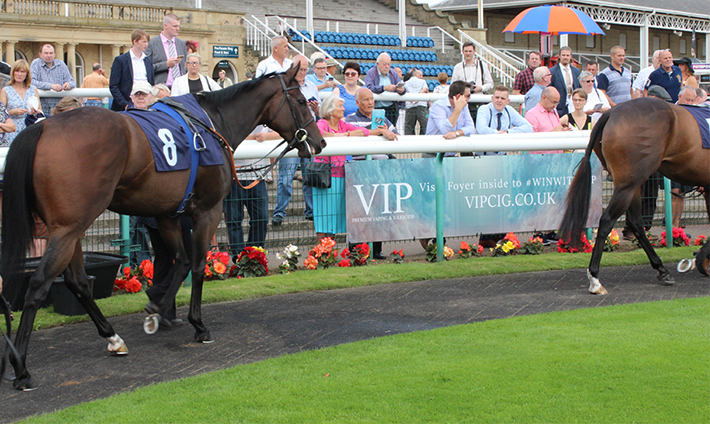
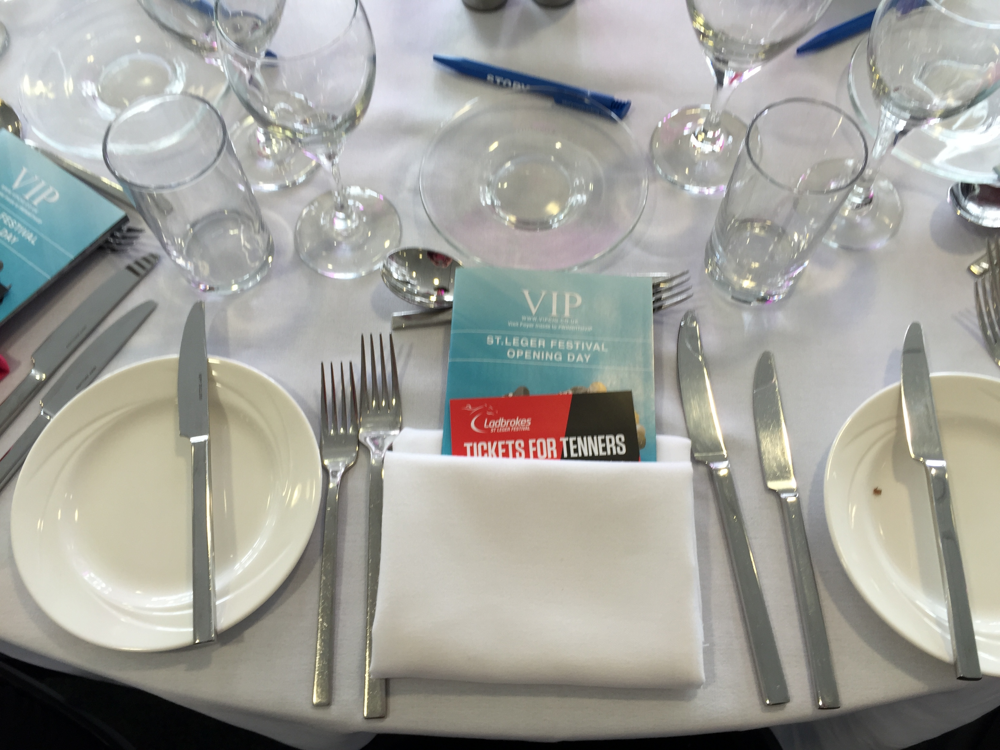
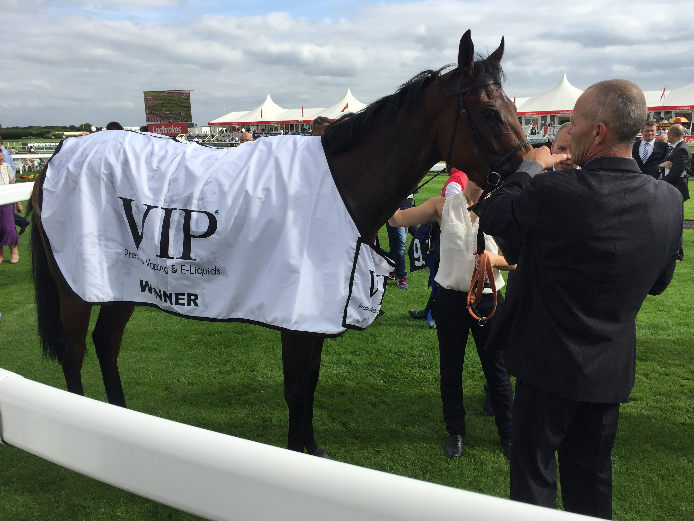

Victory at Doncaster

A day out at the races with VIP Premium Vaping and E-Liquids, turned out to be much more than I expected.
The brief was to write a news piece covering VIP's sponsorship of the event, but it wasn't long before I was coordinating video bytes, interviewing winning jockeys (on camera) and sitting down to a fabulous lunch.
We arrived at the racecourse at around 9.30am and after acquainting myself with the geography, I got stuck into making some notes about the general atmosphere and the various features VIP had contributed to the proceedings. These included a VW camper van with a VIP spray job, a giant video game and a rather cool vaping lounge.
It was the vaping lounge that I headed to for respite from the heat, at trackside it was 21° C and it was only 10.30am. After a few minutes with my Skystorm AM30, I decided to find the press office, just in case I needed wifi later in the day and sure enough, free wifi.
As the clock crept towards lunchtime, I made my way to the Lincoln Restaurant where Louise Stamper, CCO at VIP, had kindly invited me and several others to join her for lunch. Fantastic food and chilled champagne in the company of fine folk, such as Tracey Tennison from Nexus Engage, Marc Rayton, who works at Space and People and Cal Moores from VIP - Cal acted as my valiant sidekick for the day.

Lunch over and it was time for the races to begin. The first race was won by a beautiful looking horse called Lost at Sea. By 3pm it was time for the VIP sponsored race, the highlight of the day and I had been asked to try to grab the winning jockey for a quick interview - post race.

The VIP Premium Vaping and E-Liquids Scarbrough Stakes, was a 5-furlong race with a competitive lineup. Priceless romped home to a stonking victory and after jockey Sylvestre De Sousa had finished his official media duties, he was kind enough to answer some of my questions - never in a million years did I think I would interviewing a winning jockey at the Doncaster St. Ledger Festival!
Next, back to the vaping lounge and my Skystorm. Along the way I bump into several race goers, who are more than happy to provide me with a little extra for the client, some video bytes, shot on my iPhone and gratefully received - you and me VIP!
After a little more champagne, the day started to draw to an end and it was time to reflect on all that had happened. Not only had VIP been wonderful sponsors, they had also been wonderful hosts and it's not hard to see why this company are leading the way, not only in supplying premium quality vaping products, but in experiential marketing.
To read the news article, click on the link:
http://www.vipelectroniccigarette.co.uk/news/post/vip-victory-at-doncaster-races